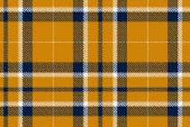

X1 X2 X3
1 1 0 0
2 1 1 0
3 1 -1 -1
4 1 -1 -1
5 -1 -1 -1
6 0 -1 -1
7 0 -1 -1
8 -1 -1 -1
9 0 0 0
10 1 1 1SVD in politics
linear algebra
matrices
SVD
Machine learning of political orientation
It often happens that a variable carries little information that’s relevant to the task at hand. Even for variables that are informative, there can be redundancy or near duplication of variables. That is, two or more variables are giving essentially the same information; they have similar patterns across the cases.
Such irrelevant or redundant variables make it harder to learn from data. The irrelevant variables are simply noise that obscures actual patterns. Similarly, when two or more variables are redundant, the differences between them may represent random noise.
It’s helpful to remove irrelevant or redundant variables so that they, and the noise they carry, don’t obscure the patterns that machine learning could learn.
As an example of such a situation, consider votes in a parliament or congress. This section explores one such voting record, the Scottish Parliament in 2008. The pattern of ayes and nays may indicate which members are affiliated, i.e. members of the same political party. To test this idea, you might try clustering the members by their voting record.
Table @ref(tab:scot-votes-small) shows a small part of the voting record. The names of the members of parliament are the cases. Each ballot — identified by a file number such as “S1M-4.3” — is a variable. A \(1\) means an aye vote, \(-1\) is nay, and \(0\) is an abstention. There are more than 130 members and more than 700 ballots. It’s impractical to show all of the 100,000+ votes in a table. But there are only 3 levels for each variable, so displaying the table as an image might work. (Figure @ref(fig:raw-parliament-votes))

It’s hard to see much of a pattern here, although you may notice something like a tartan structure. The tartan pattern provides an indication to experts that the data could be re-organized in a much simpler way.1
As a start, Figure @ref(fig:ballot-values) shows the ballot values for all of the members of parliament for two randomly selected ballots. (Jittering is used to give a better idea of the point count at each position. The red dots are the actual positions.)
Each point is one member of parliament. Similarly aligned members are grouped together at one of the nine possibilities marked in red: (Aye, Nay), (Aye, Abstain), (Aye, Aye), and so on through to (Nay, Nay). In these two ballots, eight of the nine are possibilities are populated. Does this mean that there are 8 clusters of members?
Intuition suggests that it would be better to use all of the ballots, rather than just two. In Figure @ref(fig:many-ballots), the first 336 ballots have been added together, as have the remaining ballots. This graphic suggests that there might be two clusters of members who are aligned with each other. Using all of the data seems to give more information than using just two ballots.
You may ask why the choice was made to add up the first 336 ballots as \(x\) and the remaining ballots as \(y\). Perhaps there is a better choice to display the underlying patterns, adding up the ballots in a different way.
In fact, there is a mathematical approach to finding the best way to add up the ballots, called “singular value decomposition” (SVD). The mathematics of SVD draw on a knowledge of matrix algebra, but the operation itself is readily available to anyone.2 Figure @ref(fig:ballot-PCA) shows the position of each member on the best two ways of summing up the ballots.
Warning in geom_point(shape = 1, color = "red", size = 7, aes(x = 0, y = 0)): All aesthetics have length 1, but the data has 134 rows.
ℹ Please consider using `annotate()` or provide this layer with data containing
a single row.Figure @ref(fig:ballot-PCA) shows, at a glance, that there are three main clusters. The red circle marks the “average” member. The three clusters move away from average in different directions. There are several members whose position is in-between the average and the cluster to which they are closest.
For a graphic, one is limited to using two variables for position. Clustering, however, can be based on many more variables. Using more SVD sums enables may allow the three clusters to be split up further. The color in Figure @ref(fig:ballot-PCA) above shows the result of asking for 6 clusters using the 5 best SVD sums. Table @ref(tab:scottish-clustering) compares the actual party of each member to the cluster memberships.
# A tibble: 7 × 7
party . . . . . . . . . cl…¹ `1` `2` `3` `4` `5` `6`
<fct> <int> <int> <int> <int> <int> <int>
1 Member for Falkirk West 0 0 0 1 0 0
2 Scottish Conservative and Unionist Party 0 1 0 1 0 18
3 Scottish Green Party 0 0 0 1 0 0
4 Scottish Labour 49 5 0 2 2 0
5 Scottish Liberal Democrats 1 0 0 0 16 0
6 Scottish National Party 0 1 34 1 0 0
7 Scottish Socialist Party 0 0 0 1 0 0
# ℹ abbreviated name: ¹`party . . . . . . . . . cluster`How well did clustering do? The party affiliation of each member of parliament is known, even though it wasn’t used in finding the clusters. For each of the parties with multiple members, the large majority of members are placed into a unique cluster for that party. In other words, the technique has identified correctly that there are four different major parties.
Warning in geom_point(shape = 1, color = "red", size = 7, aes(x = 0, y = 0)): All aesthetics have length 1, but the data has 773 rows.
ℹ Please consider using `annotate()` or provide this layer with data containing
a single row.There’s more information to be extracted from the ballot data. Just as there are clusters of political positions, there are clusters of ballots that might correspond to such factors as social effect, economic effect, etc. Figure @ref(fig:issue-clusters) a shows the position of each individual ballot, using the best two SVD sums as the x- and y-coordinates.
There are obvious clusters in Figure @ref(fig:issue-clusters). Still, interpretation can be tricky. Remember that, on each issue, there are both aye and nay votes. This is what accounts for the symmetry of the dots around the center (indicated by an open circle). The opposing dots along each angle from the center might be interpreted in terms of socially liberal vs socially conservative and economically liberal versus economically conservative. Deciding which is which likely involves reading the bill itself.
Finally, the “best” sums from SVD can be used to re-arrange cases and separately re-arrange variables while keeping exactly the same values for each case in each variable. (Figure @ref(fig:SVD-ballots).) This amounts simply to re-ordering the members in a way other than alphabetical and similarly with the ballots. This dramatically simplifies the appearance of the data compared to Figure \(\ref{fig:raw-parliament-votes}\). With the cases and rows arranged as in Figure @ref(fig:SVD-ballots), it’s easy to identify blocks of members and which ballots are about issues for which the members vote en bloc.
Footnotes
For those who have studied linear algebra: “Much simpler way” means that the matrix can be approximated by a matrix of low-rank.↩︎
In brief, SVD calculates the best way to add up (i.e. linearly combine) the columns and the rows of a matrix to produce the largest possible variance. Then SVD finds the best way to add up the what’s left, and so on.↩︎